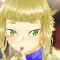
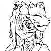

キャラクター説明と背景設定一覧
キャラクター

蒲公英(ほこうえい):井栗古都
初期刀:山姥切長義
初鍛刀:なし
奇抜な見た目を装っているが、かなりの霊的過敏体質。
一般家庭出身だが、そっち方面の知覚過敏がひどく幼少期から霊障に悩まされていた。
突然奇声を上げたり挙動不審になったりしていた為、変人扱いをされ嫌がらせを受けていた。
(なので奇抜な見た目は威嚇や自衛のためである)
ある日、知り合いの政府役人から歴史改変対策部署への就職を打診され検査を受けたところ、審神者適性があったため審神者学校へと入学。
しかし鍛刀、顕現能力が無かったため特殊審神者業を営むことになった。
顕現維持はできるのでおもに傷ついた刀剣の療養や主を失った刀剣男士の中継ぎ或いは保護を行なっている。
初期刀は政府にて本丸配属がかなわず雑務をさせられていた山姥切長義を譲り受けた。
ヘッドフォンはノイズキャンセリング機能があり、マスクは嗅覚遮断機能が付いている。
鴨跖草(つきくさ):雨面つゆ
初期刀:歌仙兼定
初鍛刀:謙信景光
九州のど田舎でほそぼそと続いていた土着信仰で贄にされた少年。
信仰される神はただの妖崩れの弱種だったが、神子である７つまでの子供を食らうことで力を溜め込み、いずれ神になり上がるつもりだった。
しかし今回贄にされた少年があまりにも清い霊力を持っていたため、時の政府がこれ幸いと妖との対話の末に引き取った。
鴨跖草くん的には政府のおじさんたちは自分を救ってくれた救世主。
ある日本丸襲撃を受けたことにより初期刀の歌仙兼定と初鍛刀謙信景光を残して全滅。現在は心の傷を癒すためにケアヘルスを受け持つ本丸に住まわされている。
レア鍛刀バンバンできるタイプ。
政府を救世主だと思ってるので何も疑うことなくダブったレアを譲渡してた。
担当が黒で、証拠を隠滅する際に襲撃させる穴を開けた。担当は処分済み。こんのすけはロボっぽいけどいい子。
 鳥兜(とりかぶと):優月菖蒲 初期刀:なし 初鍛刀:なし
世界が改変されたことにより両親がいなくなってしまった元孤児。
幼くして親を失ったが、改変が関わっているためすぐさま保護されたので一般教育は為されている。
審神者適性こそあったものの世界が正されると「審神者になった優月菖蒲」が消失するため、時間遡行などの仕事ができない。
しかし本丸や政府内で完結する業務は修正力の余波を受けない為、他本丸の補助や審神者のケアヘルスを行なっている。
また、彼女の本丸は中継ぎから引き継がれる刀剣男士の最終メンタルチェックや、中継ぎと引き継ぎ審神者間の仲人も行う。
鴨跖草がお世話になる本丸であり、蒲公英の本丸の男士のヘルスチェックや引き継ぎ仲介をしている。
各審神者間の関係図
小手毬
鳥兜に強力な審神者の力があった為特別教官を務めた。彼女の生い立ちが原因で審神者どころか特殊実験施設送り(だって歴史が戻ればその事実だけが消えてデータは残るんだよ？って言う理由)になるところだったのをどうにか救った。
彼女の性格は彼女の真面目モードにかなり引っ張られてる。
蒲公英 審神者学校時代に顕現適性がないと判明し退学させられようとしてたところを三亀経由で小手毬に助けられる。 小手毬の紹介で鳥兜の元に研修に行き、中継ぎとしての業務についた。
鴨跖草 本丸襲撃の際の救助隊として小手毬が参加しており小手毬の紹介で鳥兜本丸に行くことになった。 小手毬本丸と鴨跖草本丸の謙信は双子のように仲がいい。
鳥兜 小手毬を師とし、蒲公英に指南し、鴨跖草を保護する立場。彼女の本丸が中心になり藤矢家審神者たちは繋がっている。
この話での審神者の常識的な世界観設定
審神者歴の話
審神者歴１〜２年までが新人。
２年目から４年目くらいまでが中堅で、5年以降は審神者プロジェクト時代なので地獄見てきたとこもあり玄人扱い。
特に６年審神者は本編主人公審神者合わせて３０しかいない。
今回出た５人が初代生き残り様で、６人が次代生き残り様
１９人はブラック政府時代の拉致審神者。拉致審神者は１００前後は投下されたらしいけれど大概が
１.無理やり連れてかれてブラック化→殉死または呪殺
２.頼れる人が神様しかいないと依存する→好かれすぎて神隠し
３.上ふたつでデットorヘブンじゃねーか！とストレスフルになって疑心暗鬼からの自殺
の３パターンでほとんどが死亡。
このままだと歴史守る以前だろうが！！とむぅちゃんことむつの様がキレて神の眷属になり、政府に対する絶対的な権力として君臨した。
今は多分５、６００人程度審神者さんがいる。
定例報告会議
月一で玄人審神者３０人プラス各国審神者から中堅１人又は２人集めての定例会議がある。
議題は戦地での異変、歴史修正主義者を倒したことによる歴史の変化の報告や、新たな改変事項のお知らせ。
後ブラック本丸審査会、審神者からの要望のまとめと、その要項に対する採用不採用の選定もこの会議で決まる。
あとは政府からの刀剣男士に対する連絡事項と、敵勢力に対する未確定情報の開示がある。
ここで審神者を交えて話し合いをして、確定要素があれば連絡、不安定であれば玄人審神者たちにより調査、検討を行う。